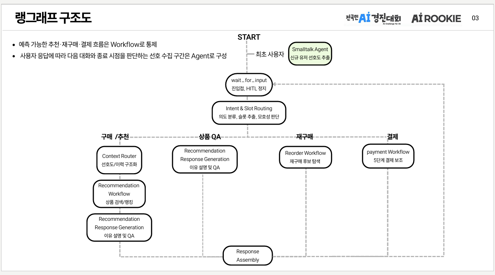

CASE 01
Stateful Agent Architecture
RESULT
19개 노드LangGraph 기반 멀티에이전트 워크플로우- PROBLEM
멀티턴 쇼핑에서는 같은 발화도 현재 상품, 장바구니, 결제 상태에 따라 다른 행동을 의미했습니다.
대화 기록만으로 상태를 추론하면 잘못된 단계 이동이나 이전 행동의 재실행이 발생할 수 있었습니다.
- ACTION
LangGraph workflow를 구성하고 ShoppingState에
stage·pending_action·selected_product·cart·payment를 명시적으로 관리했습니다.Intent / Context / Product / Response / Payment / Recovery 역할을 분리하고, 각 노드가 필요한 상태만 읽고 갱신하도록 구성했습니다.
- WHY
- Agent를 단순한 prompt chain이 아니라 명시적인 state machine으로 설계해야 멀티턴 거래 흐름을 예측 가능하게 통제할 수 있다고 판단했습니다.
Flexible reasoning, deterministic action.

선호 수집·응답 생성은 Agent가 유연하게, 추천·재주문·결제는 예측 가능한 워크플로우로 분리